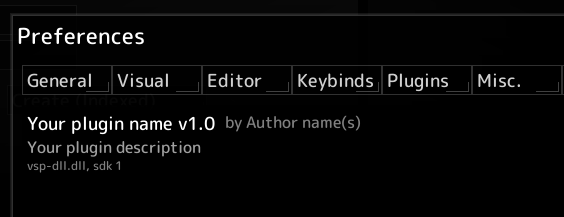

This page will guide you through setting up a development environment for creating native plugins for voidsprite.
First, you must create a C++ project that builds a shared library, meaning on Windows it will build a .dll file, on Linux a .so file, and on macOS a .dylib file.
In Visual Studio, create a new project, switch the project type to C++ and select the "Dynamic Link Library (DLL)" preset.
Users running your plugin will need to have the Visual C++ Redistributable installed, which is already required for voidsprite.
To build the project, select > .
To build a shared library with g++, use the following command:
g++ -shared -o output.dll source_file.cpp
Replace .dll with the appropriate extension for your target platform.
.dll.so.dylib
The voidsprite SDK is a single-header library, meaning you only need to include it in your source file to start using it.
The latest version of it can be downloaded here: https://nightly.link/counter185/voidsprite/workflows/msbuild/main
Copy this header file to your project to the same directory as your main.cpp file.
dllmain.cpp.
In main.cpp, add the following code:
#include "voidsprite_sdk.h"
voidspriteSDK* vsp = nullptr;
void pluginInit(voidspriteSDK* sdk) {
vsp = sdk;
//Your initialization code goes here.
//This is where you register all components of your plugin,
//such as filters, brushes, etc.
}
const char* getPluginName() {
return "Your plugin name";
}
const char* getPluginVersion() {
return "1.0";
}
const char* getPluginDescription() {
return "Your plugin description";
}
const char* getPluginAuthors() {
return "Author name(s)";
}
With this code, you can now build a valid voidsprite plugin that will load when placed in the plugins directory in the Application data directory.
